2. Classification: Clustering
K-Means, Gaussian Mixture Models, EM algorithm, unsupervised learning, dimensionality reduction
1. Classification vs Object Detection
These are two fundamentally different computer vision tasks that are frequently confused.
| Task | Goal | Output |
|---|---|---|
| Image Classification | Label the entire image with a single category | One class label (e.g., "CAT") |
| Object Detection | Find, localize, and count specific objects in an image | Bounding boxes + labels + counts |
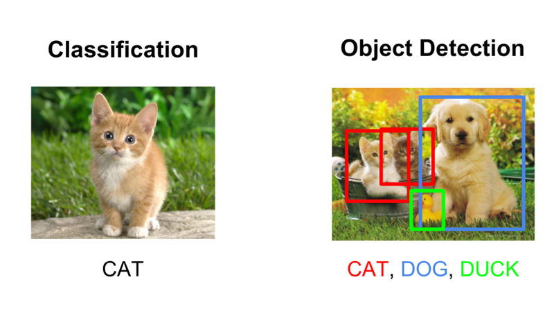
2. Supervised vs Unsupervised Learning

| Aspect | Supervised | Unsupervised (Clustering) |
|---|---|---|
| Training data | Input vectors and labels | Input vectors only — no labels |
| Feedback | Direct (knows correct answer) | None |
| Goal | Predict outputs for new inputs | Find hidden structure |
| Example | Digit recognizer with known labels | Group digits without knowing labels |
This module covers unsupervised clustering. The running example is handwritten digit classification using the MNIST dataset (28x28 pixel images of digits 0–9), where the goal is to group similar-looking images together without using labels.
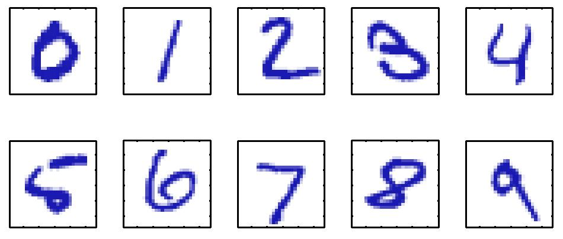
3. K-Means Clustering
K-Means is the most fundamental clustering algorithm. The intuition: given a scatter plot of $N$ data points, partition them into $K$ groups such that each group's points are as close as possible to their group's center.
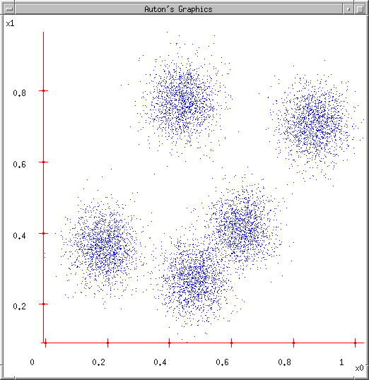
Algorithm — Intuitive Steps
- Initialize: Randomly place $K$ cluster centers (centroids) in the data space.
- Assign: Assign each data point to its nearest cluster center.
- Update: Recompute each cluster center as the centroid (mean) of all points assigned to it.
- Repeat steps 2–3 until assignments stop changing (convergence).
Voronoi Regions and Classification
After convergence, the cluster centers define Voronoi regions: every point in space is assigned to the nearest center. New test points can be classified by finding the nearest cluster center.

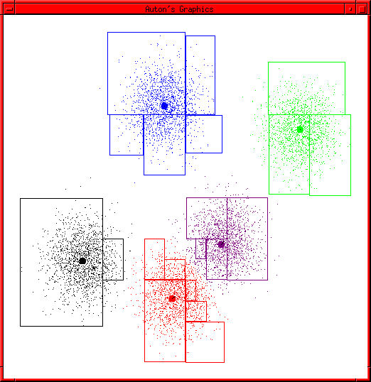
4. K-Means Mathematics
Euclidean Distance
Distance between two points in $D$ dimensions:
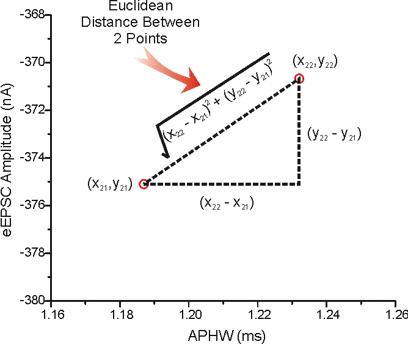
Cost Function (Distortion)
where $r_{nk} = 1$ if point $x_n$ is assigned to cluster $k$, else $r_{nk} = 0$; $\mu_k$ is the center of cluster $k$.
$J$ is the sum of squared Euclidean distances from each data point to its assigned cluster center.
Alternating Optimization
K-Means minimizes $J$ by alternating two steps:
| Phase | What is minimized | What is fixed | Operation |
|---|---|---|---|
| Assignment (E-step) | $J$ over $r_{nk}$ | $\mu_k$ | Assign each $x_n$ to nearest center: $k^* = \arg\min_k \|x_n - \mu_k\|^2$ |
| Update (M-step) | $J$ over $\mu_k$ | $r_{nk}$ | Recompute $\mu_k = \frac{\sum_n r_{nk}\,x_n}{\sum_n r_{nk}}$ |
Convergence and Choosing K
K-Means is guaranteed to converge because $J$ cannot increase at any step. For choosing $K$:
- Compute optimal clustering for all candidate $K$ values.
- Plot $J$ vs $K$: use the elbow method — pick the $K$ where $J$ drops steeply then levels off.
- $J$ always decreases as $K$ increases, so the elbow is the best tradeoff.
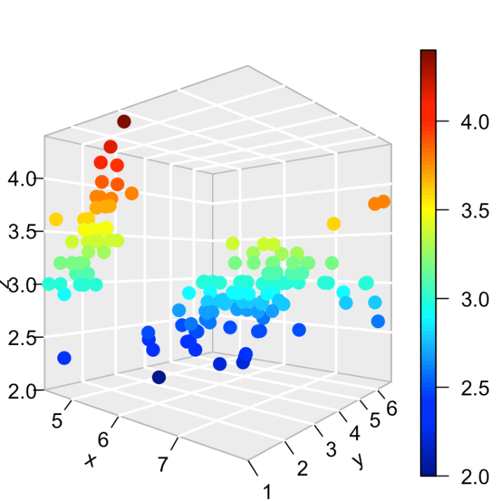
5. K-Means Applied to Digit Classification
Images as Vectors
Each 28×28 pixel MNIST image is flattened into a 784-dimensional vector by reading pixels row by row:
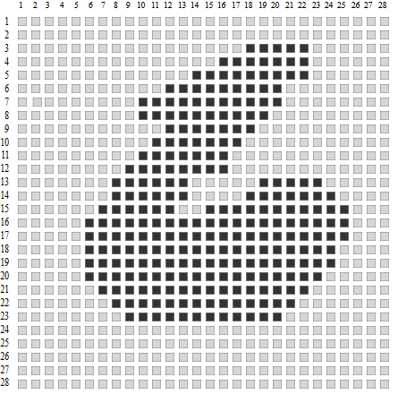
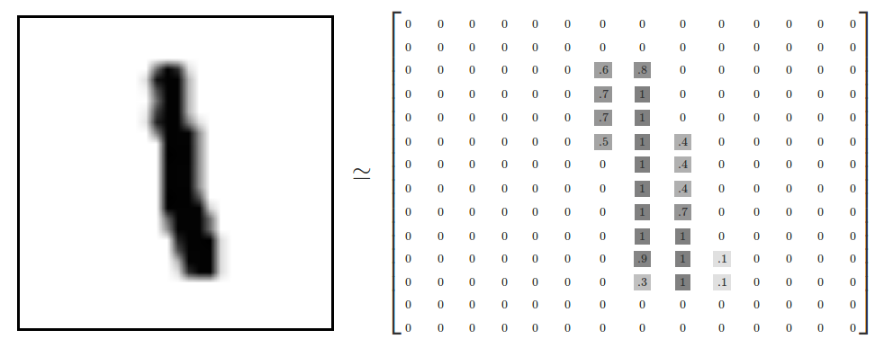
Cluster Centroids as "Average Digits"
Each centroid $\mu_k \in \mathbb{R}^{784}$ can be reshaped back into a 28×28 image, revealing the "average" appearance of its cluster.
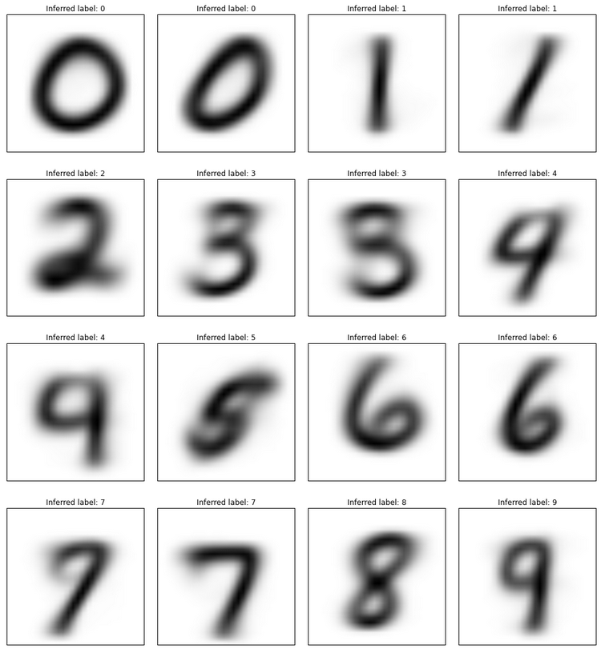
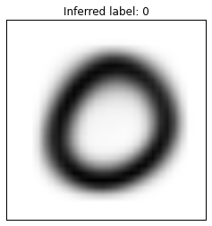
Digits with similar visual structure will have cluster centers that are close in 784-dimensional space. Expected overlaps:
- 3 and 8: similar curve structure
- 4 and 9: similar vertical strokes with a top loop
- 5 and 6: similar curved lower portion
- 7 and 1: both mostly vertical with small extras
Overlapping clusters lead to more classification errors because new digits in the overlap region may be assigned to the wrong cluster.
6. K-Means Properties
| Property | Details |
|---|---|
| Hard assignment | Every point belongs to exactly one cluster (binary $r_{nk}$) |
| Convergence guaranteed | $J$ decreases (or stays the same) at every step |
| Local minima only | Result depends on random initialization; multi-start is essential |
| $K$ must be specified | Cannot automatically determine the number of clusters |
| Assumes spherical clusters | Does not handle elongated or irregular shapes well |
K-Means Pseudocode
For each seed trial:
1. INITIALIZE: Randomly place K centers mu_1, ..., mu_K
2. REPEAT:
a. ASSIGNMENT: For each point x_n:
assign to k* = argmin_k ||x_n - mu_k||^2
set r_{n,k*} = 1, r_{n,j} = 0 for j != k*
b. UPDATE: For each cluster k:
mu_k = (sum of x_n where r_{nk}=1) / (count in cluster k)
c. COMPUTE J = sum of r_{nk} * ||x_n - mu_k||^2
UNTIL J does not improve
Select trial with lowest J as final result.
7. Gaussian Mixture Models
Why Move Beyond K-Means?

GMM replaces hard cluster centers with $K$ Gaussian distributions. Each cluster is described by a full probability distribution, and each data point has a probability of belonging to each cluster.
| Aspect | K-Means | GMM |
|---|---|---|
| Assignment | Hard (0 or 1) | Soft (probability 0–1) |
| Cluster shape | Implicitly spherical (Voronoi) | Elliptical (covariance matrix) |
| Output per point | Cluster label $k$ | Probability $P(k \mid x)$ for all $k$ |
| Parameters | Centroids $\mu_k$ | Means $\mu_k$, variances $\sigma_k^2$, mixing coefficients $\pi_k$ |
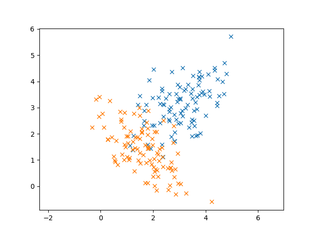
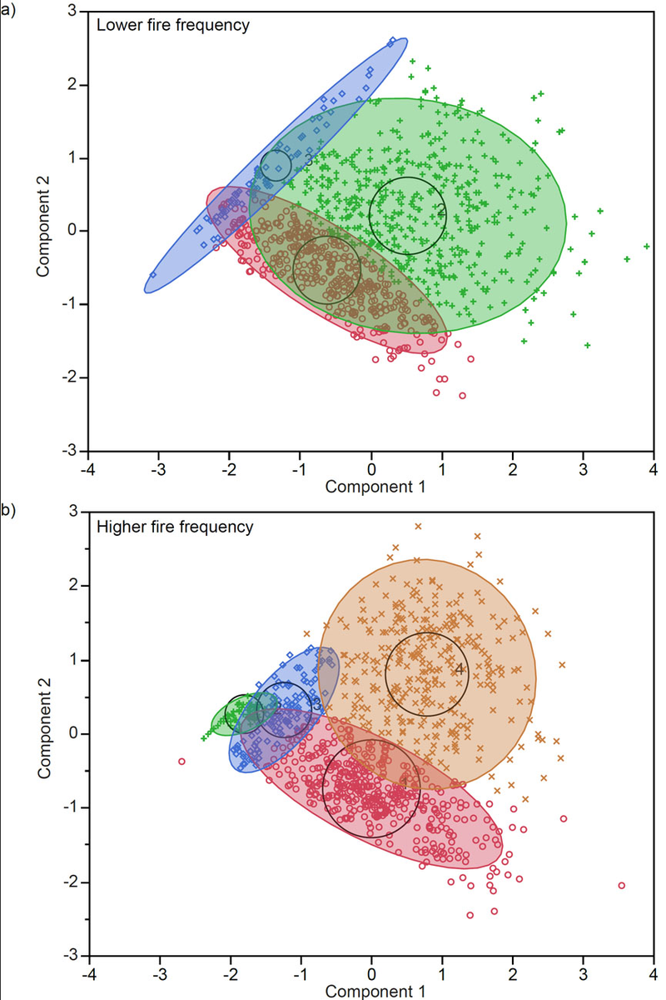
8. Gaussian Distributions
1D Gaussian
$\mu$ = mean (center), $\sigma$ = standard deviation (width), $\sigma^2$ = variance.
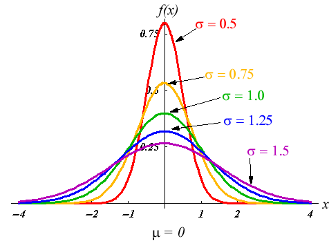
2D and Multivariate Gaussian
$\boldsymbol{\mu}$ = mean vector, $\Sigma$ = covariance matrix (controls shape and orientation).
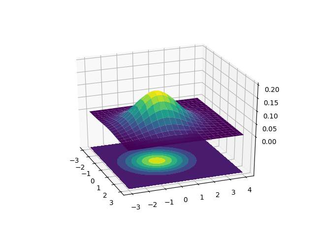
$P(x_i \mid k)$ = likelihood: probability density of observing $x_i$ under Gaussian $k$ (computed from the PDF).
$P(k \mid x_i)$ = posterior: probability that point $x_i$ belongs to cluster $k$ (what we want — computed via Bayes' theorem).
9. EM Algorithm
The Expectation-Maximization (EM) algorithm fits a GMM to data. It is the soft-assignment analog of K-Means alternating optimization.
E-Step: Compute Soft Assignments
For each data point $x_i$ and each Gaussian $k$, compute the posterior probability using Bayes' theorem:
$P(x_i \mid b)$ = likelihood under Gaussian $b$; $P(b)$ = prior (mixing coefficient); $a_i = 1 - b_i$.
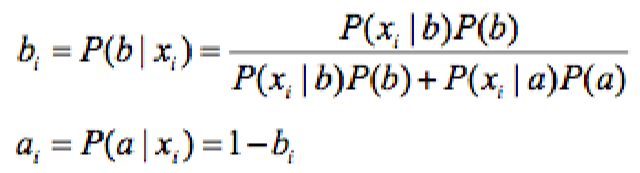
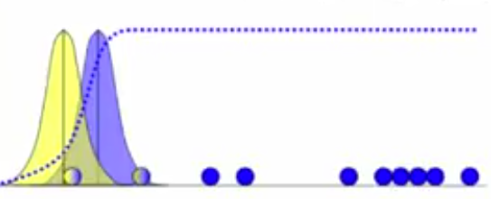
M-Step: Recompute Gaussian Parameters
Using the soft assignments as weights, update each Gaussian's parameters:
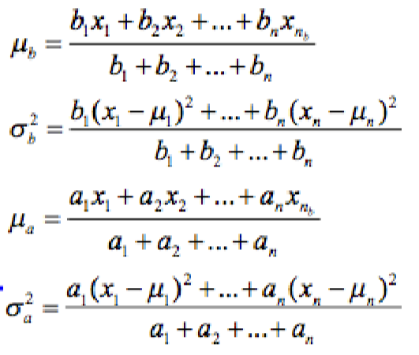
Unlike K-Means (where only assigned points update a centroid), in EM every point contributes to every Gaussian, weighted by how likely it is to belong to that Gaussian.
Visual Convergence
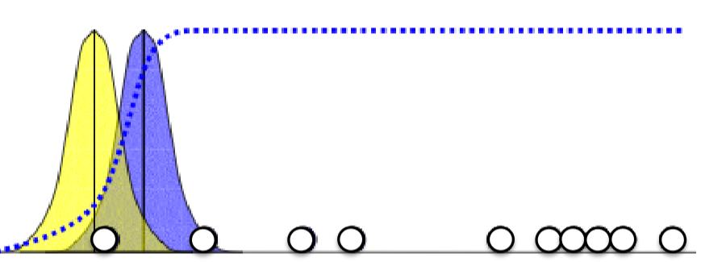
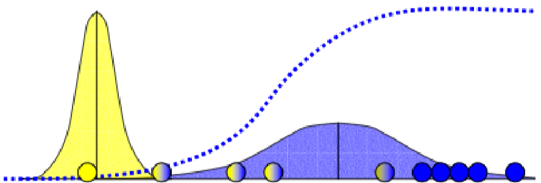
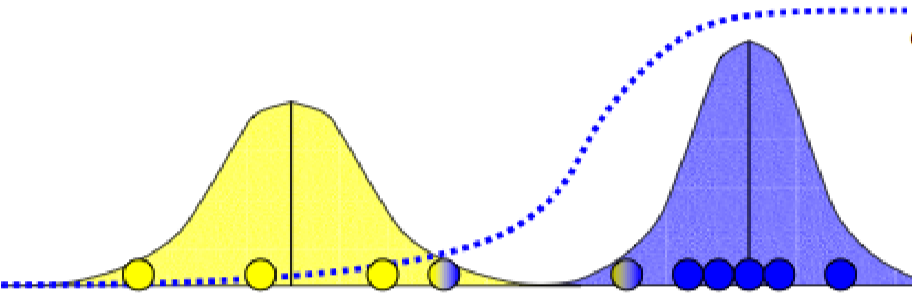
EM in 2D
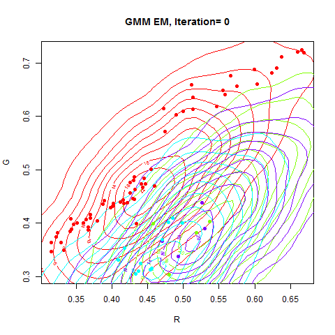
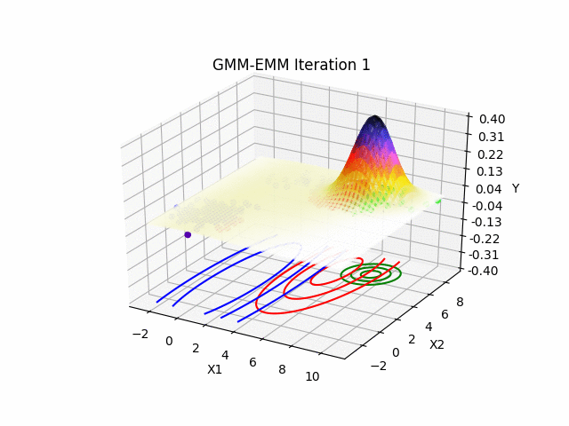
10. GMM and EM Summary
Input: Data {x_1, ..., x_N}, number of Gaussians K
1. INITIALIZE: Randomly set mu_k, sigma_k, pi_k for each k
2. REPEAT:
E-STEP: For each point x_i, each Gaussian k:
Compute likelihood: P(x_i | k) using Gaussian PDF
Compute posterior: gamma(i,k) = P(k | x_i) via Bayes' theorem
M-STEP: For each Gaussian k:
mu_k = weighted mean (weights = gamma(i,k))
sigma_k = weighted variance (weights = gamma(i,k))
pi_k = average of gamma(i,k) over all points
UNTIL Gaussian updates are small (convergence)
K-Means vs GMM Side-by-Side
| K-Means | GMM + EM | |
|---|---|---|
| Initialization | Random centroids | Random Gaussian parameters |
| E-step | Assign each point to nearest centroid (hard) | Compute posterior probability for each Gaussian (soft) |
| M-step | Recompute centroid as mean of assigned points | Recompute mean/variance using weighted points |
| Assignment type | Binary $r_{nk} \in \{0,1\}$ | Probabilistic $\gamma_{ik} \in [0,1]$ |
| Cost function | Distortion $J$ (sum of squared distances) | Log-likelihood |
| Convergence | $J$ stops decreasing | Parameter updates become small |
| Cluster shape | Spherical (Voronoi) | Elliptical (covariance matrix) |
| Property | K-Means | GMM |
|---|---|---|
| Convergence guaranteed | Yes | Yes (to local min) |
| Global optimum guaranteed | No | No |
| $K$ must be specified | Yes | Yes |
| Handles overlapping clusters | Poorly | Well |
| Computationally expensive | Less | More |
11. Dimensionality Reduction (PCA)
MNIST digit images are 784-dimensional, making clustering computationally expensive (especially for GMM, which requires 784×784 covariance matrices).
| Benefit | Explanation |
|---|---|
| Faster computation | Distance calculations in ~50D are much cheaper than 784D |
| Less memory | Covariance matrices shrink from 784×784 to ~50×50 |
| Noise reduction | Low-variance dimensions often correspond to noise |
| Visualization | Reduce to 2D or 3D to plot and inspect clusters |